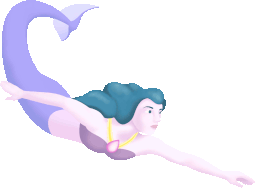
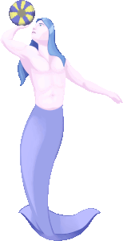
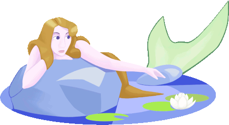

|  |
ColumbusColumbus reported that he saw three mermaids on his first voyage to the Americas. On January 4, 1493, according to Purchas, the admiral observed in his log that the female forms "rose high out of the sea, but were not as beautiful as they are represented." The creatures were probably dolphins or manatees, but Columbus, like other mariners of his day, was ready to see new marvels in every latitude. His mind was conditioned by medieval illustrations, fables, travelers' accounts, and astrological prophecies about unseen territories far beyond the familiar coastlines of Europe. The historian Arciniegas points out that Columbus's favorite book was Cardinal Pierre D'Ailly's Imago Mundi, a preposterous description of the unknown world by an early 15th century "new age" philosopher. If, as D'Ailly claimed, the lands of the "other hemisphere" were inhabited by giants, pygmies, dog-faced savages and Amazons, the seas around these could very likely teem with seductive creatures, half woman, half fish. |
|  |
Marco PoloCardinal D'Ailly's book and the fantastic published narratives of Mandeville, "Prester John," Marco Polo and others were imaginative stimuli for early mermaid sightings among privileged explorers who could read. But for the vast majority of illiterate sailors, there were only superstition and the wild rumors that always circulated, in the ports of Europe. The acute physical and emotional deprivation of the early sea voyage, added to these, could easily trigger fantasies and mutinous hallucinations, as some of the ships' logs confirm. As far back as the first century AD, Pliny the Elder was convinced of the existence of mermaids or "Nereides," with bodies "rough and scaled all over." But the full image, the classic form of the creature, was provided by the influential 5th century Bestiary, of Physiologus. This treatise on animals and their natures was published and circulated throughout the world in many translations until 1724. In Physiologus, the mermaid is "a beast of the sea wonderfully shapen as a maid from the navel upward and a fish from the navel downward, and this beast is glad and merry in tempest, and sad and heavy in fair weather." The odd contrariety of her nature suggests a dark side developed and elaborated later by Christian writers. especially clerics. |
|  |
John GerbrandusThe Church, of course, was always quick to appropriate and to modify pagan myths and beliefs to its own advantage among the folk. 'the mermaid could be useful as a figure of virtue or a figure of sin. A Carmelite monk, John Gerbrandus, recorded that in 1403 "a wyld woman" was washed through a broken dike in the Netherlands and was found by some milkmaids flailing her tail in the mud of a nearby embankment. Clothed and fed, she learned to spin wool with her webbed fingers. She was eventually taken to Haarlem, where she learned "to worship the cross" and to live, in speechless piety, for 15 years. The episode was verified by John Swan in his eculumMundi (1635). Religion joined scientific inquiry in the account of seven mermaids caught in fishnets off the coast of Ceylon in 1560. A team of Jesuits and a physician named Bosquez, aide to the Viceroy of Goa, performed autopsies and published their findings in the annual Relations of The Society of Jesus. They concluded that mermaids are anatomically and spiritually identical to humans. |
About
This page is a recreation of a fictional page as seen in Season 1 Episode 5 of the 2006 television series "H2O: Just Add Water". The accuracy of any information found on this page is not guaranteed, as the text on it is as it is shown in the show verbatim.
H2O: Just Add Water is a creation of Jonathan M. Shiff Productions.
As of 2023, H2O: Just Add Water is available on most streaming services and on YouTube. I recommend watching on YouTube, because the official YouTube channel has a higher quality version than any streaming services or physical media release.
The operator of this site is not affiliated with Jonathan M. Shiff Productions.
This site's source is available on GitHub! https://github.com/juicenet/mermaidmyths.com